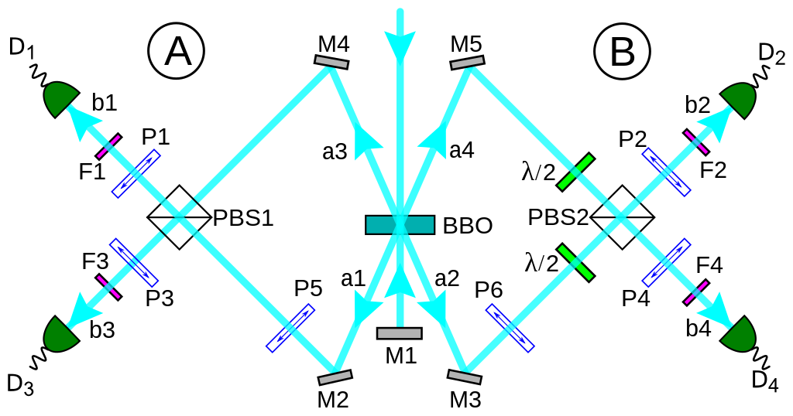

Оптический компьютер
Оптические или фотонные вычислители — гипотетические вычислительные устройства, вычисления в которых производятся с помощью фотонов, излучаемыми лазерами или светодиодами. Большинство современных исследований направлено на замену традиционных (электронных) компонентов компьютера на их оптические эквиваленты. Предполагается, что результатом этих исследований станет новая цифровая компьютерная технология для обработки двоичных данных. Такой подход по замене элементной базы даёт возможность в краткосрочной перспективе разработать технологии для коммерческого применения, поскольку оптические компоненты могут быть использованы в классических компьютерах, сначала при создании гибридных электронно-фотонных систем, а затем и полностью фотонных. Однако оптоэлектронные приборы теряют 30 % энергии при преобразовании электроэнергии в свет и обратно, что также замедляет скорость передачи информации в оптоэлектронных повторителях. В гипотетическом полностью оптическом компьютере не будет преобразования сигнала из оптического в электрический и обратного преобразования в оптический сигнал. Предполагается, что результатом этих исследований станет новая цифровая компьютерная технология для обработки двоичных данных. Такой подход по замене элементной базы даёт возможность в краткосрочной перспективе разработать технологии для коммерческого применения, поскольку оптические компоненты могут быть использованы в классических компьютерах, сначала при создании гибридных электронно-фотонных систем, а затем и полностью фотонных.
Фотонная логика
Фотонная логика гипотетически должна использовать отдельные фотоны света в логических вентилях (таких как NOT, AND, OR, NAND, NOR, XOR, XNOR). Переключательные функции можно бы реализовать нелинейными оптическими эффектами, вызываемых одним управляющим оптическим сигналом и воздействующих на другой оптический сигнал.  При реализации фотонной логики могут быть необходимы оптические резонаторы, увеличивающие энергию за счёт усиливающей интерференции (интерференции в одной фазе) и упрощающие возникновение нелинейных эффектов. Также исследуется фотонная логика на отдельных молекулах с использованием эффекта фотолюминисценции. В 2011 году Witlicki и др. продемонстрировали выполнение логических операций на молекулах с использованием рамановской спектроскопии SERS.